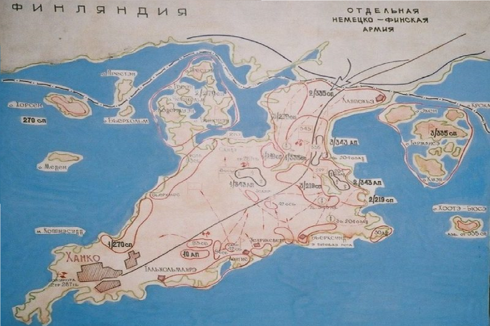

1941
|  |
ПредисторияВ начале Великой Отечественной войны в июне 1941 года, после начала операции "Барбаросса", Финляндия решила воспользоваться ситуацией и вернуть территории, утраченные в ходе Зимней войны (1939-1940). Ханко, с его стратегически важной военно-морской базой, стал одной из ключевых целей финского командования. |
|
▎Операция "Ханко" Бои за ХанкоСражения за Ханко проходили в условиях сложного рельефа и жестоких боевых действий. Финские войска использовали тактику мобильных атак, что позволяло им быстро маневрировать и находить слабые места в обороне советских войск. К концу августа 1941 года финны начали решающую атаку, сосредоточив силы на ключевых направлениях. |
|
▎Итоги |